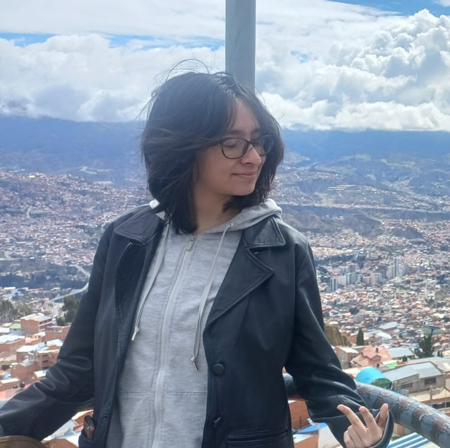

Alejandra Arguedas
Ayudar es sembrar esperanza en otra vida.
Mi GitHubSobre mí
¡Holaa a todos! Mi nombre es Alejandra Arguedas; pero pueden llamarme Ale, estudio Diseño Digital y actualmente estoy cursando el 4.º semestre. Espero conocerlos a todos y aprender juntos.
Gustos e intereses
- Dibujar
- Escuchar música
- Salir a caminar
- Grabado y serigrafia
Algo que me inspira

La noche estrellada, de Vincent Van Gogh. Me inspira su capacidad de crear y transformar la realidad a través del arte. Pintores como Van Gogh buscaron demostrarle al mundo todo lo que eran capaces de expresar y crear. De la misma manera, yo quiero encontrar mi propia voz y demostrarle al mundo de lo que soy capaz.